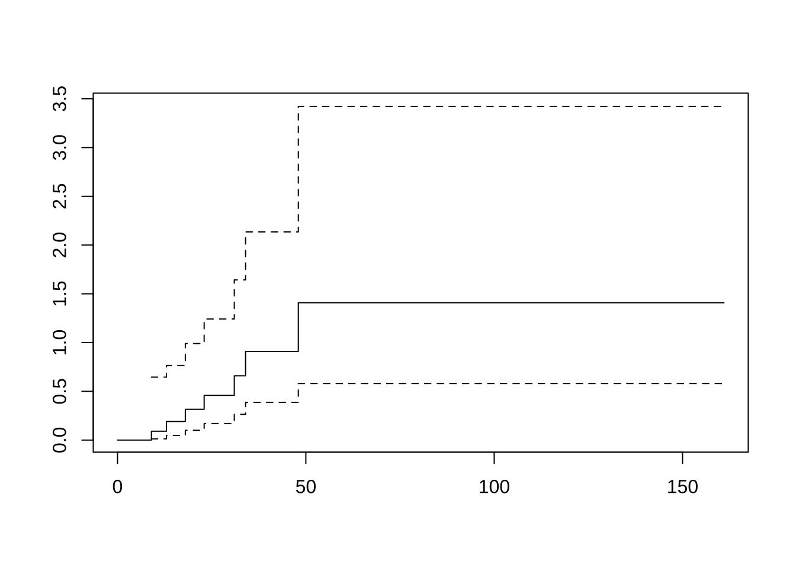

제 3 장 비모수적 방법을 이용한 생존함수의 비교
3.1 비모수적 방법을 이용한 생존함수의 비교
두 개의 독립 집단에 대하여 다음과 같이 생존시간을 관측하였다고 하자.
\[\begin{align*} \text{group 1} \quad & (X_{11}, \delta_{11}), (X_{12}, \delta_{12}) , \dots ,(X_{1 n_1}, \delta_{1 n_1}) \\ \text{group 2} \quad & (X_{21}, \delta_{21}), (X_{22}, \delta_{22}) , \dots ,(X_{2 n_2}, \delta_{2 n_2}) \\ \end{align*}\]
두 개의 집단에 대한 생존함수가 동일하다는 다음 가설을 고려하자.
\[ H_0: S_1 = S_2 \quad H_1: S_1 \ne S_2 \]
위의 가설은 두 집단의 생존시간을 모두 합쳐서 순서대로 나열하고 중도절단이 없는 자료들에서 다음과 같은 \(2\times 2\) 분할표를 작성한 다음 CMH-검정 통계량을 이용하여 검정할 수 있다.
| 처리/반응여부 | 사망 | 생존 | 합계 |
|---|---|---|---|
| 1 | \(a\) | \(b\) | \(n_1\) |
| 2 | \(c\) | \(d\) | \(n_2\) |
| 합계 | \(m_1\) | \(m_2\) | \(n\) |
다음과 같은 예제 자료를 고려해보자
\[\begin{align*} \text{[group 1]} \quad & 3,~~5,~~7,~~9+~~, 18 \\ \text{[group 2]} \quad & 12,~~ 19,~~ 20,~~ 20+,~~ 33+ \\ \end{align*}\]
두 표본을 합쳐서 순서대로 놓으면 다음과 같다.
\[ 3,~~5,~~7,~~9+~~12,~~ 18, ~~ 19,~~ 20,~~ 20+,~~ 33+ \]
이제 중도절단이 없는 자료들(\(3,5,7,12,18,19,20\))에 대하여 각각 \(2\times 2\) 분할표를 작성하고 CMH-검정 통계량을 계산할 수 있다. 각 분할표와 관련 통계량을 다음과 같은 표로 정리할 수 있다.
| \(X\) | \(n\) | \(m_1\) | \(n_1\) | \(a\) | \(E_0(A)\) | \(a-E_0(A)\) | \(m_1 m_2/(n-1)\) | \(n_1 n_2 /n^2\) |
|---|---|---|---|---|---|---|---|---|
| 3 | 10 | 1 | 5 | 1 | 0.50 | 0.50 | 1 | 0.2500 |
| 5 | 9 | 1 | 4 | 1 | 0.44 | 0.56 | 1 | 0.2469 |
| 7 | 8 | 1 | 3 | 1 | 0.38 | 0.62 | 1 | 0.2344 |
| 12 | 6 | 1 | 1 | 0 | 0.17 | -0.17 | 1 | 0.1389 |
| 18 | 5 | 1 | 1 | 1 | 0.20 | 0.80 | 1 | 0.1600 |
| 19 | 4 | 1 | 0 | 0 | 0 | 0 | 1 | 0 |
| 20 | 3 | 1 | 0 | 0 | 0 | 0 | 1 | 0 |
이제 다음과 같이 CMH 통계량을 계산할 수 있다.
\[ CMH ~~\chi^2 = \frac {[ \sum (a-E_0(A))]^2}{ \sum [m_1 m_2/(n-1)][n_1 n_2 /n^2] } \]
여기서
\[\begin{align*} \sum (a-E_0(A)) & = 0.50 + 0.56 + 0.62 -0.17 + 0.80 \\ & = 2.31 \\ \sum [m_1 m_2/(n-1)][n_1 n_2 /n^2] & = (1)(0.2500) + (1)(0.2469) + (1)(0.2344) \\ &+ (1)(0.1389) + (1)(0.1600) + (1)(0) + (1)(0) \\ & = 1.0302 \end{align*}\]
따라서 \[ CMH ~~\chi^2 = \frac{(2.31)^2} {1.0302} = 5.1796 \]
유의수준 \(\alpha=0.05\)에서 \(\chi^2(1,0.95) = 3.84159 <5.1796\)이므로 \(H_0\)를 기각한다. 즉 두 집단의 생존함수는 같지 않다.
t <- c(3, 5, 7, 9, 12, 18, 19, 20, 20, 33)
delta <- c(1,1,1,0,1,1,1,1,0,0)
treat <- c("A", "A", "A", "A", "B", "A", "B", "B", "B", "B")
df <- data.frame(t, delta, treat)
res.comp <- survdiff(Surv(t, delta) ~ treat, data=df)3.2 예제
The data set “pancreatic” in the “asaur” package consists of pancreatic cancer data from a Phase II clinical trial where the primary outcome of interest is progression-free survival. As we saw in the previous chapter, this quantity is defined as the time from entry into a clinical trial until progression or death, whichever comes first. The data consist of, for each patient, the stage, classified as “LAPC” (locally advanced pancreatic cancer) or “MPC” (metastatic pancreatic cancer), the date of entry into the clinical trial, the date of death (all of the patients in this study died), and the date of progression, if that was observed before death. The first six observations are shown in this output.
head(pancreatic)## stage onstudy progression death
## 1 M 12/16/2005 2/2/2006 10/19/2006
## 2 M 1/6/2006 2/26/2006 4/19/2006
## 3 LA 2/3/2006 8/2/2006 1/19/2007
## 4 M 3/30/2006 . 5/11/2006
## 5 LA 4/27/2006 3/11/2007 5/29/2007
## 6 M 5/7/2006 6/25/2006 10/11/2006attach(pancreatic) # make the variable names accessible
# convert the text dates into R dates
Progression.d <- as.date(as.character(progression))
OnStudy.d <- as.date(as.character(onstudy))
Death.d <- as.date(as.character(death))
# compute progression-free survival
progressionOnly <- Progression.d - OnStudy.d
overallSurvival <- Death.d - OnStudy.d
pfs <- pmin(progressionOnly, overallSurvival)
pfs[is.na(pfs)] <- overallSurvival[is.na(pfs)]
# convert pfs to months
os <- overallSurvival
status <- rep(1, length(pfs))
# Note: "pancreatic2" is already part of the "asaur" package; this is how one would create it:
#pancreatic2 <- data.frame(pfs, os, status, stage) # create "pancreatic2" data frame
# library(pancreatic2) # an alternative to the above is to just use pancreatic2
pfs.month <- pfs/30.5
plot(survfit(Surv(pfs.month) ~ stage), xlab="Time in months",
ylab="Survival probability", col=c("blue", "red"), lwd=2)
legend("topright", legend=c("Locally advanced", "Metastatic"),
col=c("blue","red"), lwd=2)
3.3 일반화 로그 순위 검정
\[ CMH ~~\chi^2 = \frac {w_i[ \sum (a-E_0(A))]^2}{ \sum w_i^2 [m_1 m_2/(n-1)][n_1 n_2 /n^2] } \]